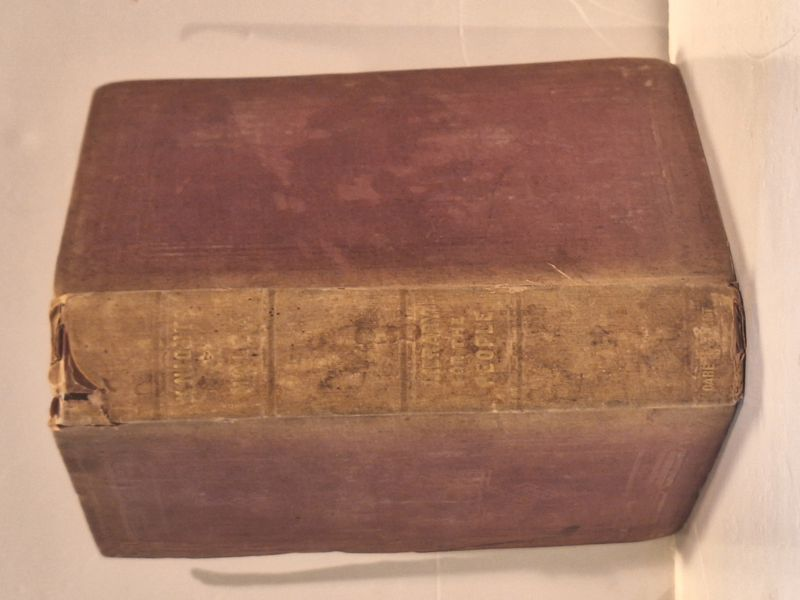

Achievements of the Knights of Malta
Alexander Sutherland · Carey and Hart, Philadelphia, 1846

C$295 · Fair condition
Carey and Hart, Philadelphia, 1846. First American edition of Alexander Sutherland's two-volume history of the Knights of Malta (the Sovereign Military Hospitaller Order of St. John of Jerusalem, of Rhodes and of Malta) from their twelfth-century origins through the Napoleonic dispossession of 1798. Hardcover, both volumes bound together in one volume of original red/maroon cloth boards - period pencil note in the upper margin of the Vol I title page reads 'For Vol II see after page 228,' and the separate Vol II title page (typographically identical to Vol I but reading 'Vol. II') is photographed in place after page 228, physically confirming the two-volumes-in-one binding. Vol. I runs to 228 pages and Vol. II continues to 216 pages (444 pages total). Spine heavily worn with portions of cloth lifted and a later printed paper label partially legible; boards rubbed at corners; light foxing throughout. The genuine 1846 first American Carey & Hart edition is scarce on the market - only two other original copies currently listed on AbeBooks worldwide at time of listing, both in leather bindings. This is the cloth-bound variant.
Details
- Publisher: Carey and Hart, Philadelphia, 1846
- Binding: Hardcover
- Edition: First American Edition (Volumes I and II bound in one)
- Condition: Fair
- Category: Military